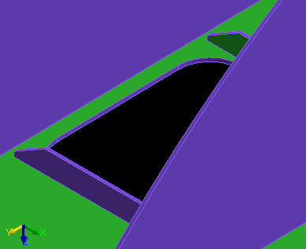
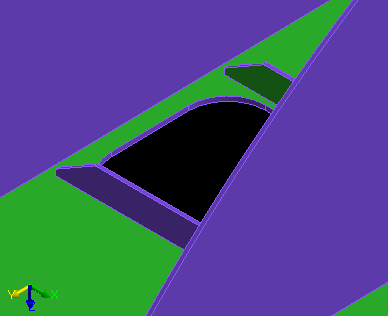
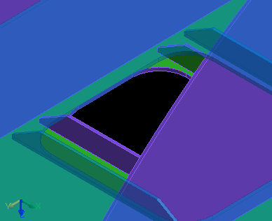
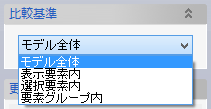
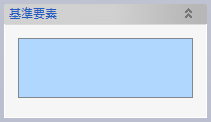
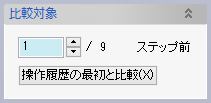
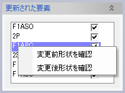
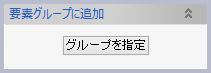
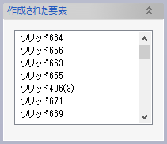
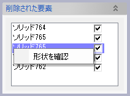

形状差分
モデルの現在の形状を、操作履歴をさかのぼった過去の形状と比較して、変更のあったソリッドの名前を一覧表示し、さらに変更前形状をプレビュー表示します。
  
操作方法
現在と過去の形状を比較したいソリッド要素を選択し、OKボタンをクリックします。
- 変更のあった要素
- あらたに作られた要素
- 削除されてすでに存在しない要素
の一覧がリストに表示されます。また、変更前および削除前の形状がプレビュー表示され、現在の形状と比較できます。
パラメータ
- 比較基準

過去のモデルと形状を比較したい要素の選択方法を指定します。
- モデル全体
モデルに含まれる全てのソリッドおよびコンポーネント要素を対象とします。
- 表示要素内
モデルに含まれるソリッドおよびコンポーネント要素のうち、表示がOnになっている要素を対象とします。
- 選択要素内
対象となるソリッドおよびコンポーネント要素を選択します。

- 要素グループ内
選択した要素グループに含まれる全てのソリッドおよびコンポーネント要素を対象とします。

- モデル全体
- 比較対象

過去のどの時点と形状を比較するかを操作履歴のステップ数で指定します。入力欄の右側に表示される数字は、ファイルを開いてからの全履歴のステップ数です。「操作履歴の最初と比較」ボタンをクリックすると、ステップ数に最大値がセットされます。
比較結果
- 更新された要素
形状が変更された要素の名前がリストに表示されます。チェックボックスで変更前形状のプレビュー表示のOn/Offを切り替えられます。また、要素名を右クリックして表示されるコンテキストメニューで要素をズーム表示できます。
- 要素グループに追加
更新された要素を指定した要素グループに追加できます。
- 作成された要素
新しく作成された要素の名前がリストに表示されます。
- 要素グループに追加
作成された要素を指定した要素グループに追加できます。
- 削除された要素

削除された要素の名前がリストに表示されます。チェックボックスで削除前形状のプレビュー表示のOn/Offを切り替えられます。また、要素名を右クリックして表示されるコンテキストメニューで要素をズーム表示できます。